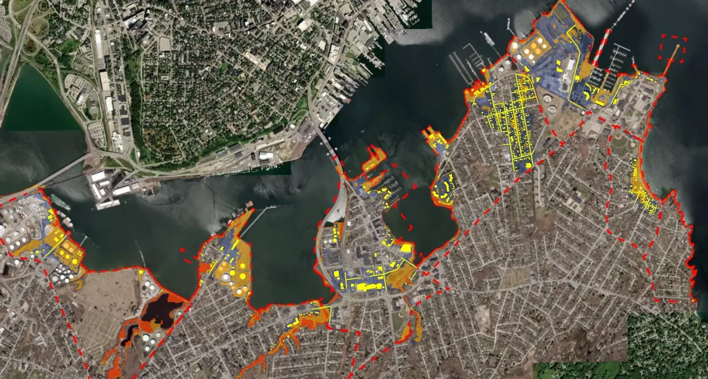

The Comprehensive Plan forms the “foundation for community actions, policies and regulations.” The citizens of South Portland are encouraged to participate by attending meetings in person or to watch via livestream. It is crucial that citizens voice what the goals for the city should be.
After the January 13th storm surge and flooding, PSP and the community advocated for the Comprehensive Plan Committee to move its climate goals from the last of five goals to the number one goal for future planning and development. Placing climate resilience as the number one goal is a first in South Portland history. We are grateful to have such responsive Comprehensive Plan Committee members.
THE #1 GOAL AS NOW WRITTEN IN THE MOST RECENT DRAFT:
1. Ecology and Climate Readiness. South Portland will collectively take responsibility for preserving and protecting its natural places and preparing for the impacts of climate change. Goals include:
We encourage citizens to work with the Comprehensive Plan Committee to support the climate goals as the details of the plan are created. Visit SouthPortland2040.com to catch up on progress of the plan and to learn how you can participate. Email or call your city council members. You can help shape the future of South Portland.
There is a large-scale residential development referred to as Yard South proposed next to scenic Bug Light Park. As described in a recent site walk, Yard South, in phase one, is planning to build three or four 18-story towers with 1200 or more residential units. The developers claim there will be 8–10% affordable housing units provided. The current owners are expected to apply for a contract zone from light industrial to allow residential in the Shipyard district. We believe they will submit their application in May.
For the following reasons, PSP has grave health and safety concerns for this proposed zone change:
Because of these concerns, before any zoning change, Protect South Portland is a strong advocate for:
We encourage you to contact the City Councilors to share any questions or concerns you may have about this issue and talk to your friends & neighbors:
If you are interested in having your voice heard in-person, public comment on any subject is allowed for up to 3 minutes at all City Council meetings. Click here to find the schedules and agendas for City Council and Comprehensive Plan meetings.
Want to get involved? There’s a range of different issues, including greatly increased traffic and the widening of Broadway, related to Yard South development. For more information, call or email Cathy Chapman.
Read the full Yard South archive: Yard South Proposal page.
Three of PSP’s ordinance campaigns are archived on their own pages — each won a lasting protection for South Portland’s air, soil and bay:

Clean air over South Portland, eight years after the ordinance stood up to Big Oil.
READ THE ARCHIVE →

Next: City Council workshop - Tuesday, Oct 27, 6:30 p.m., South Portland High School. Act now.